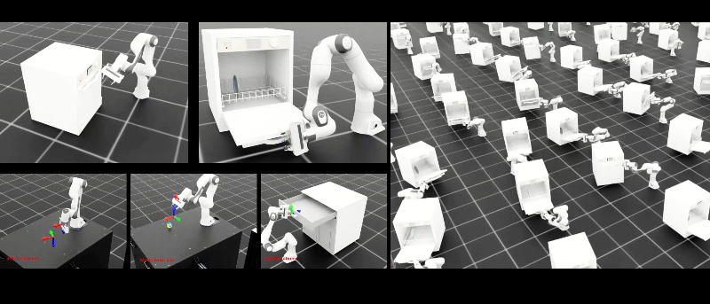

Aprenentatge per reforç per a tasques de manipulació complexes i dinàmiques
Treball de Fi de Màster · Nota: 10/10 amb Matrícula d'Honor
El Repte: Ensenyar habilitats complexes de manipulació dinàmica no prehensil, com ara desencallar el pestell i obrir la porta abatible d'un rentaplats, és un repte notori en robòtica. Cadenes cinemàtiques tancades, friccions discontínues i la dinàmica d'alliberament del mecanisme fan fallar el control de posició tradicional. L'aprenentatge per reforç (RL) en simulador ofereix una alternativa adaptativa, però superar la bretxa de simulació a realitat (Sim2Real) és el coll d'ampolla clau per a la seva execució física.
Aportacions:
• Entorn de Simulació en GPU: Desenvolupament d'un entorn de simulació d'alt rendiment a NVIDIA Isaac Sim i Isaac Lab, aprofitant el processament tensorial en GPU per entrenar milers d'agents de RL en paral·lel.
• Modelatge del Mecanisme Articulat: Reconstrucció cinemàtica i dinàmica precisa de les resistències de la frontissa i mecanismes d'enclavament de la porta.
• Formulació de Recompenses Progressives: Disseny de funcions de recompensa per fases d'aprenentatge progressiu (*curriculum learning*), permetent al manipulador Franka Emika Panda (7 DoF) coordinar flexibilitat i tracció contínua sense perdre contacte.
• Aleatorització de Domini Sim2Real: Aplicació d'aleatorització de domini (masses, friccions, retards d'actuació) per blindar les polítiques davant la incertesa del món físic.
• Pont de Comunicació en ROS 2: Creació d'un canal de control en ROS 2 per connectar les polítiques entrenades en simulació amb el braç robòtic físic per a la seva validació experimental.
Resultats i Impacte: Entrenament exitós d'una política de RL robusta capaç d'obrir la porta d'un rentaplats simulat davant de diferents condicions inicials, validant la transferència zero-shot de moviments bàsics al robot real Franka Panda mitjançant ROS 2. Defensat el 31 de gener de 2025 davant el tribunal de la UPC ETSEIB amb una qualificació de 10/10 amb Matrícula d'Honor.